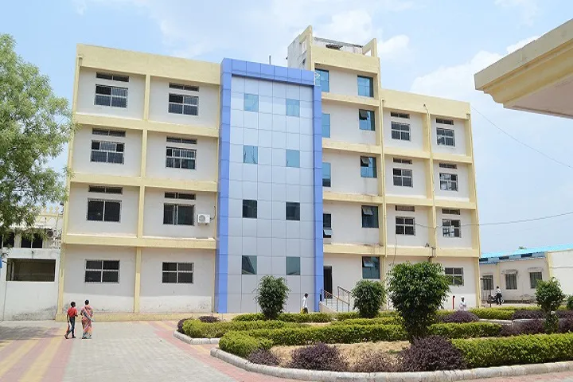

Ascend Health Hospital

Dr. Emily AdamsMBBS MD MEDICINE |
Dr. Daniel MillerMBBS MS SURGERY |
Dr. Sarah CarterMBBS, MS Ortho |
Dr. Michael DavisMBBS MD DERMATOLOGY |
Dr. Jessica LeeMBBS MS OBSTETRICS AND GYNECOLOGY |
Dr. David JohnsonMBBS MD NEUROLOGY |
Dr. Rachel MartinezMBBS MS FAMILY MEDICINE |
Dr. William TurnerMBBS MD ONCOLOGY |
Dr. Jennifer CollinsMBBS MD PSYCHIATRY |
|  |
About Our HospitalAscend Health Hospital is a state-of-the-art medical facility dedicated to providing exceptional healthcare services to our patients. With a team of highly skilled doctors and advanced medical technology, we are committed to delivering the best possible care to improve the health and well-being of our community and Hospital Is Committed To Provide Qualitative Changes In The Health Delivery System And High Quality Clinical Services To The Patients At Affordable Price. We Deliver A Most Satisfying Experience To The Patients And As Well As Their Near And Dear Ones. A Multispeciality Hospital To Take Care Of The Patient With Advanced Techniques And Competent Hospital Staff. |